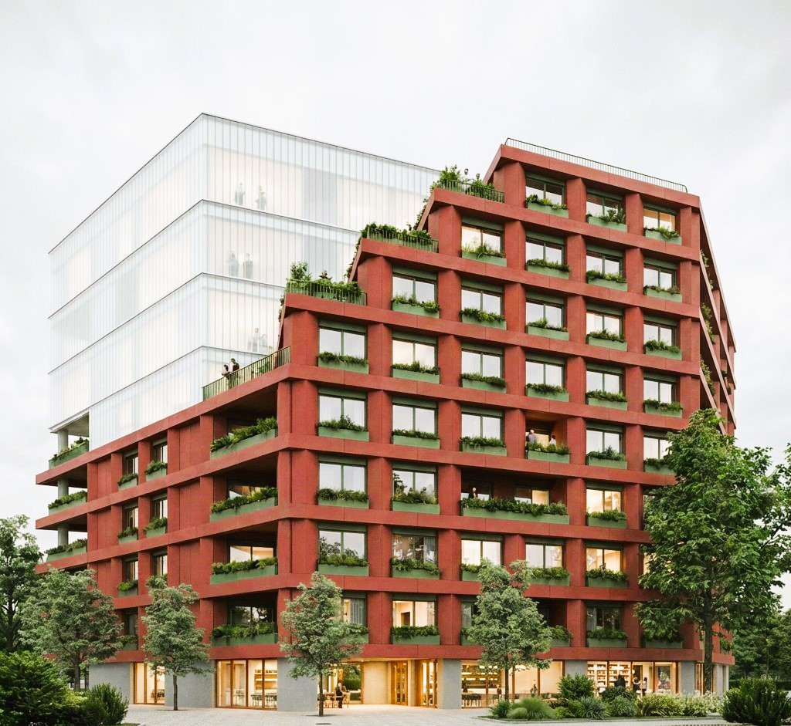
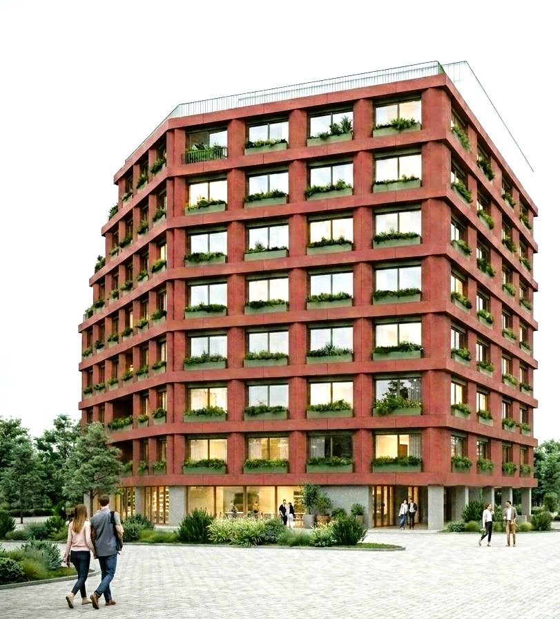

— titlu în curs —
↓ detalii proiect



Proiect de locuințe colective situat în Brașov, aflat în faza de avizare PUZ. Volumetria propune o articulare clară între zona rezidențială și parterul activ, cu o fațadă ritmată de vegetație și logii private care mediază relația dintre interior și spațiul urban.